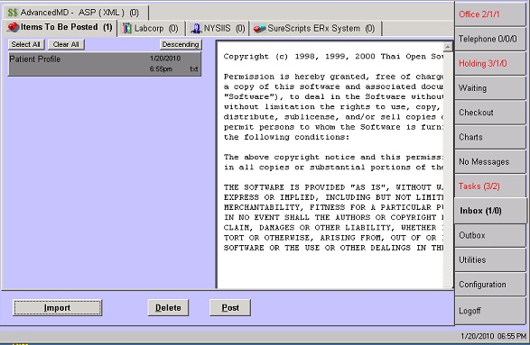
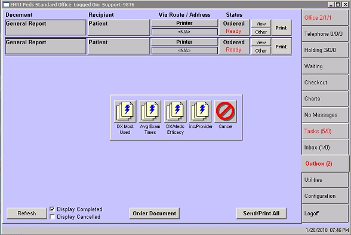

|
Solution Title:
|
Concept: Document Management for External Documents
|
|
Overview:
|
The Document Manager function used for dispatching prescriptions and patient-specific reports does not handle non-patient-specific documents, such as General Reports or messages coming into EncounterPRO from outside sources, such as a lab interface.
For non-patient-specific Docment Managment, we use the Inbox and Outbox tabs on the Office View.
NOTE: These tabs are only displayed to users with the 'User may see and manage office documents' permission and Super Users.
The Inbox
The Inbox tab on the Office View displays the same screen that is accessed from Utilities > Scan/Post Images. In fact, your practice can still use both methods of accessing the screen, or remove the button from the Utilities list and only use the Inbox tab. It is entirely up to the practice's preference.
There can be several tabs across the top, indicating where the documents on that tab originated.
- Items To Be Posted - the documents listed here have been manually imported or scanned into EncounterPRO. A practice can set up multiple To Be Posted lists, as desired.
- Third-party interfaces - each third-party interface that the practice has subscribed to will have its own tab. On that tab will be messages and documents generated by that interface. For example, if the practice is a Labcorp subscriber, there will be a Labcorp tab. On the Labcorp tab wll be messages and documents from Labcorp, such as lab results that EncounterPRO was unable to match to an existing patient/treatment. Some of these messages are time-sensitive, so the Inbox status should be monitored throughout the day.

The Outbox
The Outbox is similar to the Document Manager screen used for patient-specific documents. The main difference is that all the documents listed on the Outbox screen are General Reports.
An Order Document button displays a menu of General Reports that can be ordered. This menu is configurable and the practice can choose any number of General Reports to include. When adding a button for a report be sure to select 'Order Document' as the Document Creation parameter.

Documents on the Outbox list can be sent to specific recipients by various routes. One common recipient is the user ordering the document. Or if the person ordering the document is doing so on behalf of another EncounterPRO user, he/she would select that user as the recipient. The route will generally be Printer, although some practices may also have Fax as a route.
|
|
Keywords:
|
Inbox Outbox Document Management External Documents Reports General Reports Interface Lab SurScripts Messages
|

Copyright © 2008-2018 by the EncounterPRO Open Source Project. You may distribute it and/or modify it under the terms of the Creative Commons Attribution License, version 3.0 or later. All trademarks within this guide belong to their legitimate owners. Please attribute the EncounterPRO Open Source Project as the creator of this work. Please include this URL for the Work: encounterpro.org
Additional Instruction